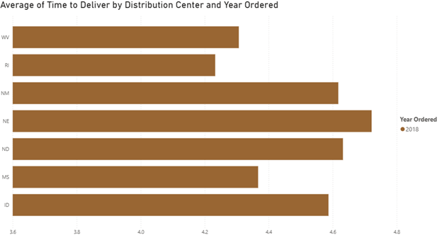

Bar charts are best for representing categorical data, or data which can be separated into groups. Humans are very good at using length to tell objects apart from each other, and bar charts make great use of this by having longer bars mean larger values for the category. Compared to column charts, bar charts project horizontally rather than vertically.
Top image is a screenshot of a self-made chart from Microsoft Power BI. Created by Alex Lents.